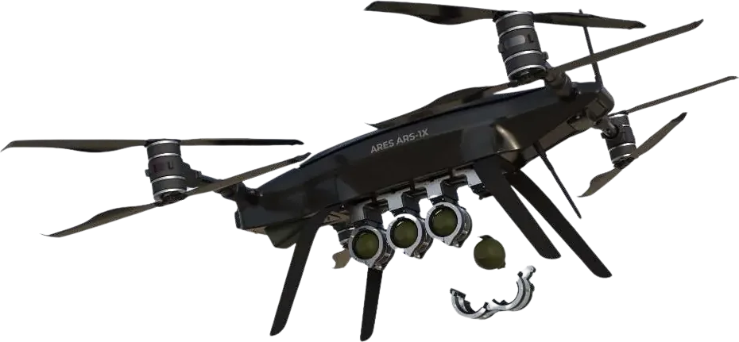
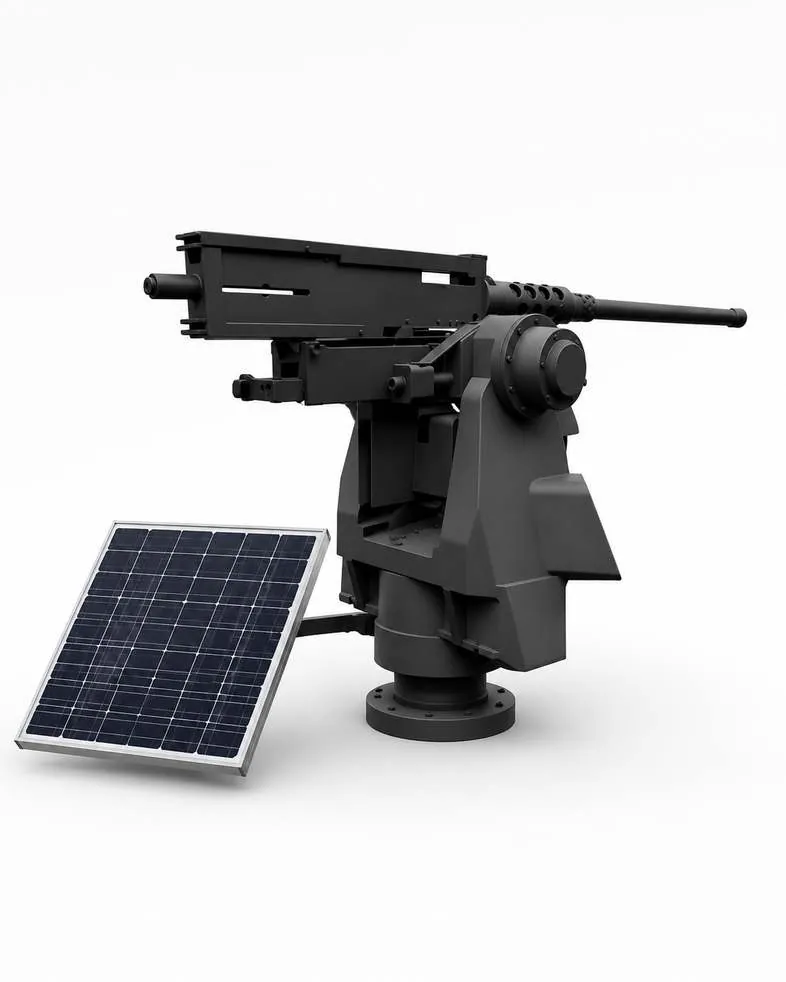
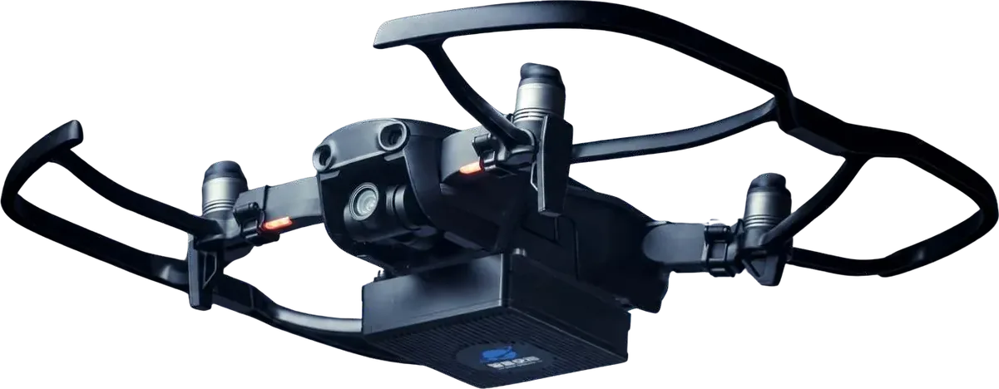
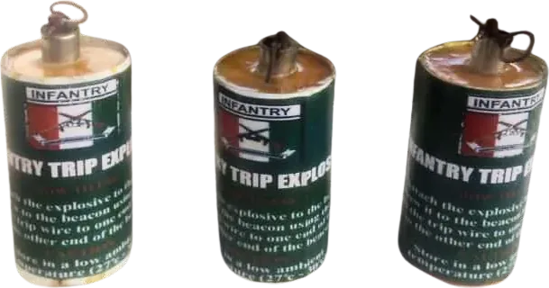

Anticipate.
Every operation that goes wrong shares a common root cause: the threat was seen too late, or not at all. Intelligence, surveillance and reconnaissance are not support functions. They are the first line of defence.
Intelligence, Surveillance & Reconnaissance
Modern operations face asymmetric threats, concealed enemy movement, and targets that are difficult to reach with limited real-time intelligence.
Without persistent awareness, commanders are forced to make decisions on incomplete information, increasing the risk of ambush and mission failure. Our ISR portfolio addresses this directly, combining aerial, satellite and ground-based systems into a single intelligence layer. It is the layer that determines whether a commander is reacting to events or shaping them.
- Surveillance and attack drones
- Satellite imagery and Synthetic Aperture Radar (SAR)
- EagleEYE remote sensing and weapon station
- Tactical early warning systems
PrimeTEK's Surveillance & Attack Drones
Asymmetric threats and concealed enemy movement limit what ground forces can see and reach without exposing personnel to unnecessary risk. Unmanned aerial systems close that gap.
PrimeTEK's Surveillance Drone and Attack Drones provide persistent aerial intelligence, reconnaissance and precision engagement without placing troops in the field of contact. Commanders gain the ability to detect, track and act on threats in real time, extending operational reach into denied or high-risk areas.
Key features- Real-time intelligence, surveillance and reconnaissance (ISR)
- Precision engagement of hostile targets while limiting collateral exposure
- Extended operational reach into denied, remote or high-risk terrain
Manufactured in Nigeria: up to 5 surveillance and attack drones a month. See production capacity.

PrimeTEK's Eagle Eye RWS
Remote-controlled surveillance and weapon stations have become essential to modern defence operations, increasing operational efficiency while reducing risk to personnel on the ground.
The Eagle Eye is built for that requirement. It integrates advanced optics, thermal imaging and real-time data processing into a single solar-powered unit, giving operators accurate targeting and superior situational awareness in off-grid and harsh operating environments. The system is engineered to operate under low visibility, high-speed movement and adverse weather, maintaining an uninterrupted data feed to monitoring stations.
Key features- Advanced optics and thermal imaging
- Real-time data processing
- Solar-powered operation for off-grid deployment
- Reliable performance in extreme and adverse conditions

Satellite Imagery and Synthetic Aperture Radar
Limited real-time intelligence on enemy movement, terrain change and evolving threats delays decision-making and increases the risk of ambush, mission failure and unintended collateral damage.
PrimeTEK's satellite imagery and analysis capability, supported by Synthetic Aperture Radar and MiniSAR solutions, delivers timely, high-resolution geospatial intelligence for military planning and operations. Combining imagery with analytical assessment allows armed forces to monitor hostile activity, assess terrain and infrastructure, and make informed decisions across every operational environment.
Key features- Up-to-date satellite imagery for battlefield awareness
- Detection and tracking of enemy movement, camps and logistics routes
- Analytical intelligence reporting for actionable decision-making
The MiniSAR
Satellite-based Synthetic Aperture Radar delivers high-value imagery, but it operates on the satellite's schedule, not the mission's.
Revisit times, tasking queues and dependence on externally operated space assets all introduce delay between the moment intelligence is needed and the moment it arrives. MiniSAR puts that same radar imaging capability directly on a PrimeTEK drone platform, placing it under the operational unit's own control. Rather than waiting for the next satellite pass, commanders can task, retask and hold coverage over an area of interest for as long as the mission requires.
Key benefitsConstant coverage
On-demand tasking
Lower latency
All-weather, day-night imaging

Tactical Early Warning Devices
Frontline troops without an effective early warning mechanism are vulnerable to surprise attack, leading to casualties and compromised defensive positions.
The Tactical Early Warning Device provides a reliable, cost-effective way to detect enemy movement before it reaches frontline positions. The system uses trip flares, smoke grenades and dummy explosives to alert troops to incoming threats while creating confusion among approaching forces. It is manufactured entirely within Nigeria, supporting affordability and ease of supply.
Key features- Early warning of enemy approach for improved battlefield preparedness
- Trip flares and smoke grenades for day and night visibility
- Dummy explosives for psychological deterrence
- 100% locally manufactured

Awareness without protection is exposure
Once a threat is identified, the mission depends on the ability to defend personnel, platforms and infrastructure against it.